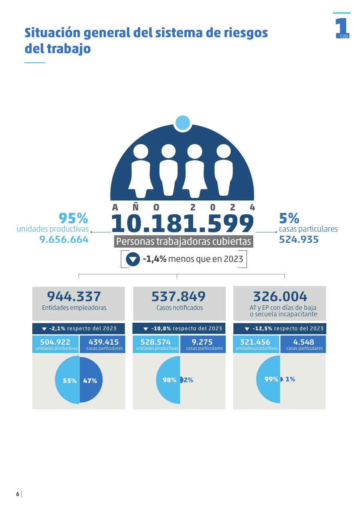

Explorá
Observá información, formulá preguntas y reconocé patrones.
Departamento de Estadística · FaEA · UNCo
Material digital de Estadística · Tecnicatura Universitaria en Higiene y Seguridad en el Trabajo · UNCo
Explorar datos para comprender fenómenos, analizarlos con herramientas estadísticas e interpretar los resultados con sentido crítico.
Teórico digital interactivo
Este material reúne las Unidades 1, 2 y 3. El primer recorrido describe datos; el segundo incorpora la probabilidad para razonar sobre resultados inciertos. Podés usarlo antes de una clase, para estudiar un tema por primera vez o para volver a consultarlo.
Observá información, formulá preguntas y reconocé patrones.
Elegí procedimientos y representaciones adecuados al problema.
Explicá qué significan los resultados y cuáles son sus límites.
Estación 1 · Problema
La Estadística ayuda a formular preguntas, organizar información y construir conclusiones fundamentadas. Un número aislado no alcanza: necesitamos saber qué se midió, sobre qué población, con qué definiciones y durante qué período.

La infografía resume indicadores del Sistema de Riesgos del Trabajo durante 2024. Presenta, entre otros datos, la cantidad de entidades empleadoras, los casos notificados y los accidentes de trabajo o enfermedades laborales con días de baja o secuelas incapacitantes. También distingue entre unidades productivas y casas particulares.
Estos indicadores ofrecen una primera descripción del período y permiten formular nuevas preguntas para profundizar el análisis.
¿Por qué analizar informes como este? En Higiene y Seguridad Laboral, muchas decisiones no se toman a partir de un único accidente o de una observación aislada, sino del análisis de bases de datos, registros e informes estadísticos. Estas fuentes permiten identificar problemas frecuentes, detectar tendencias, priorizar acciones preventivas y fundamentar decisiones con evidencia.
Para pensar: ¿qué otras preguntas podrían responderse con este informe? Por ejemplo, ¿qué actividades presentan mayor cantidad de accidentes?, ¿cómo evolucionaron los indicadores respecto de años anteriores? y ¿qué información adicional sería útil para comprender las causas y planificar acciones preventivas?
“En 2024 hubo menos casos notificados que en 2023; por lo tanto, las condiciones laborales mejoraron”.
Una comparación entre períodos requiere analizar tanto los valores observados como el tamaño de la población expuesta y la forma en que fueron construidos los indicadores.
Estación 2 · Recorrido de investigación
Una investigación estadística es un proceso cíclico e iterativo. Las conclusiones suelen generar nuevas preguntas, revisar el plan o recoger nuevos datos.
La sigla toma las iniciales en inglés de cinco momentos de una investigación estadística:
Ayuda a reconocer que investigar no consiste solo en calcular: primero se formula una pregunta, luego se decide qué observar y registrar, se analizan los datos y se comunican conclusiones que pueden abrir un nuevo ciclo.
En Higiene y Seguridad, esa lógica aparece al observar condiciones de trabajo, reunir información, clasificar incidentes, buscar patrones y evaluar acciones preventivas.
Hacé clic en cada nodo para ver qué preguntas orientan esa parte del ciclo.
“Se decide medir ruido, iluminación y temperatura en una muestra de puestos seleccionados por sector”. ¿En qué etapa se encuentra principalmente el estudio?
Estación 3 · Problema y Plan
Un municipio quiere describir las condiciones de seguridad de los comercios habilitados durante el último año. Para ello releva una selección de establecimientos y registra distintas características.
Conjunto completo de unidades sobre las que se desea obtener información.
En el caso: todos los comercios habilitados del municipio durante el período definido.
Subconjunto de la población que se observa efectivamente.
En el caso: los comercios seleccionados para el relevamiento.
Elemento individual sobre el cual se registran los datos.
En el caso: cada comercio observado.
Característica que puede tomar diferentes valores o categorías entre las unidades.
En el caso: rubro, cantidad de trabajadores, presencia de salida de emergencia o nivel de iluminación.
Se seleccionan 60 aulas entre todas las aulas de una universidad y se mide la concentración de dióxido de carbono durante una clase.
Estación 4 · Plan
Un censo observa todas las unidades. Un estudio muestral observa una parte. La decisión depende del objetivo, el tamaño de la población, el costo, el tiempo y la precisión requerida.
Puede ser apropiado cuando la población es pequeña o se necesita información individual de todas las unidades.
Permite trabajar con poblaciones grandes, siempre que el procedimiento de selección sea adecuado al objetivo.
Cada unidad tiene una probabilidad conocida e igual de ser seleccionada. Requiere disponer de un marco o listado de la población.
Ejemplo: sortear 50 legajos de una lista completa de trabajadores.
Se elige un inicio al azar y luego se selecciona cada unidad número \(k\) de una lista.
Ejemplo: inspeccionar cada décimo establecimiento después de elegir al azar el primero.
La población se divide en grupos relevantes y se toma una muestra dentro de cada estrato.
Ejemplo: seleccionar trabajadores de administración, producción y logística para que los tres sectores estén representados.
Se seleccionan grupos naturales y se observan todas o algunas unidades dentro de ellos.
Ejemplo: seleccionar plantas industriales y relevar puestos dentro de las plantas elegidas.
La selección depende de accesibilidad, voluntariedad, criterio experto u otras decisiones sin probabilidades conocidas. Pueden ser útiles para exploraciones, pero limitan la generalización.
Una empresa desea comparar tres sectores con tamaños muy diferentes y quiere asegurar que todos estén representados. ¿Qué diseño resulta más apropiado?
Estación 5 · Datos
Clasificar una variable ayuda a decidir cómo resumirla, qué gráfico usar y qué operaciones tienen sentido.
Durante una investigación de un accidente, un incidente o una enfermedad laboral, el encargado de Higiene y Seguridad Laboral reúne información para comprender la situación. Las respuestas y observaciones registradas pueden transformarse en variables estadísticas.
Además, pueden registrarse características de la persona involucrada, como su puesto, antigüedad o capacitación. Esas características constituyen variables diferentes de la pregunta “¿quién estuvo involucrado?”.
| Variable | Posibles valores | Clasificación | Por qué |
|---|---|---|---|
| Tipo de accidente | Caída, golpe, corte, sobreesfuerzo | Cualitativa nominal | Categorías sin orden natural. |
| Tipo de incidente | Caída sin lesión, colisión sin lesión, derrame controlado | Cualitativa nominal | Eventos sin lesión, clasificados en categorías. |
| Nivel de capacitación | Inicial, intermedio, avanzado | Cualitativa ordinal | Categorías con orden. |
| Cantidad de inspecciones | 0, 1, 2, 3, … | Cuantitativa discreta | Es un recuento. |
| Nivel de ruido | 82,4; 85,1; 87,6 dB(A) | Cuantitativa continua | Es una medición. |
| Días de baja laboral | 0, 1, 2, 3, … | Cuantitativa discreta | Se registra como cantidad de días. |
La variable “duración de una tarea, medida en minutos y segundos” es:
Estación 6 · Análisis
Una tabla de frecuencias resume cuántas veces aparece cada categoría o valor. Su estructura y sus representaciones dependen del tipo de variable.
Cantidad de observaciones que presentan cada categoría, valor o intervalo.
Proporción correspondiente: \(h_i=f_i/n\).
Frecuencia relativa expresada cada cien: \(100h_i\%\).
Se obtiene sumando la frecuencia de la fila actual y todas las anteriores. Permite responder cuántas observaciones son menores o iguales que cierto valor.
Expresa la proporción o el porcentaje acumulado hasta cada valor o límite de intervalo.
En 20 inspecciones se registró la cantidad de observaciones preventivas realizadas. Unidad estadística: cada inspección. Variable: cantidad de observaciones preventivas por inspección. Tipo: cuantitativa discreta.
| \(x_i\) | \(f_i\) | \(h_i\) | % | \(F_i\) | \(H_i\) | \(H_i\%\) |
|---|---|---|---|---|---|---|
| 0 | 4 | 0,20 | 20% | 4 | 0,20 | 20% |
| 1 | 7 | 0,35 | 35% | 11 | 0,55 | 55% |
| 2 | 6 | 0,30 | 30% | 17 | 0,85 | 85% |
| 3 | 3 | 0,15 | 15% | 20 | 1,00 | 100% |
Gráficos adecuados: gráfico de barras para las frecuencias simples; gráfico escalonado para las frecuencias acumuladas.
En una empresa se evaluó la exposición ocupacional al ruido en distintos puestos de trabajo. Para este ejemplo se considera una jornada habitual de 8 horas y una semana de 40 horas. La exposición es acumulativa: no alcanza con conocer el nivel en dB(A), sino que también debe considerarse cuánto tiempo dura cada exposición.
Las mediciones de nivel sonoro continuo equivalente se realizan con un medidor de nivel sonoro integrador (decibelímetro) o con un dosímetro, según las características del puesto y siguiendo el Protocolo de la Resolución SRT 85/2012.
Cada jornada de exposición evaluada en un puesto de trabajo.
Nivel sonoro continuo equivalente de la jornada, expresado en dB(A).
Cuantitativa continua.
Con mediciones como 72,8; 78,3; 81,7; 84,9; 82,1; 79,6; … casi todos los valores pueden ser diferentes. Para resumirlos, se agrupan en intervalos contiguos que cubran todo el rango sin superponerse. La elección de los intervalos influye en la forma que observaremos después en el histograma.
| Ruido [dB(A)] | \(f_i\) | \(h_i\) | % | \(F_i\) | \(H_i\) | \(H_i\%\) |
|---|---|---|---|---|---|---|
| [70,75) | 2 | 0,05 | 5% | 2 | 0,05 | 5% |
| [75,80) | 5 | 0,125 | 12,5% | 7 | 0,175 | 17,5% |
| [80,85) | 11 | 0,275 | 27,5% | 18 | 0,45 | 45% |
| [85,90) | 12 | 0,30 | 30% | 30 | 0,75 | 75% |
| [90,95) | 7 | 0,175 | 17,5% | 37 | 0,925 | 92,5% |
| [95,100) | 3 | 0,075 | 7,5% | 40 | 1,00 | 100% |
Gráficos adecuados: histograma y polígono de frecuencias para las frecuencias simples; ojiva para las frecuencias acumuladas.
Consultá un asistente de IA con una pregunta como la siguiente:
Según el Decreto 351/79 y la Resolución SRT 85/2012 de Argentina, ¿cómo se evalúa la exposición al ruido ocupacional durante una jornada de 8 horas? ¿Qué ocurre cuando aumenta el nivel de ruido y qué medidas preventivas deberían evaluarse?
Después, contrastá la respuesta con las fuentes oficiales:
Analizá: ¿la IA relacionó correctamente nivel y tiempo de exposición? ¿Diferenció controles de ingeniería, medidas administrativas y protección auditiva? ¿Qué afirmaciones necesitaste verificar?
Si 12 de 40 mediciones pertenecen al intervalo [85,90), ¿cuál es su frecuencia relativa?
Estación 7 · Análisis y comunicación
Elegir una representación depende del tipo de variable, de la estructura de los datos y de la pregunta que queremos responder.
| Gráfico | Variables adecuadas | No corresponde cuando | Puede ser poco conveniente cuando |
|---|---|---|---|
| Barras | Cualitativa o cuantitativa discreta | La variable es cuantitativa continua sin agrupar | Hay demasiadas categorías |
| Barras subdivididas | Dos cualitativas | No existe una variable de agrupación y otra de subdivisión | Hay muchas categorías o interesa comparar segmentos con precisión |
| Circular | Una cualitativa | Las categorías se superponen o no forman un total | Hay muchas categorías o diferencias pequeñas |
| Histograma | Cuantitativa continua agrupada | La variable es cualitativa | Los intervalos elegidos ocultan o distorsionan la forma |
| Dispersión | Dos cuantitativas medidas sobre las mismas unidades estadísticas | Una variable es cualitativa o las observaciones no están emparejadas | Hay mucha superposición de puntos |
Se desea representar la evolución mensual de la cantidad de accidentes de trabajo durante un año.
Estación 8 · Centro y posición
En un simulacro se registraron los tiempos de evacuación de diez sectores: 3, 4, 4, 5, 5, 5, 6, 6, 7 y 15 minutos. ¿Qué valor utilizarías para describir un tiempo “típico”? La respuesta depende de qué aspecto del conjunto queramos resumir.
Se obtiene sumando todos los valores y dividiendo por la cantidad de observaciones.
Notación habitual: \(\mu\) representa la media poblacional y \(\bar{x}\) la media muestral.
Interpretación: sintetiza el conjunto en un único valor representativo que tiene en cuenta todas las observaciones.
Es el valor central de los datos ordenados: deja aproximadamente el 50% por debajo y el 50% por encima.
Responde: ¿qué valor ocupa el centro del orden?
Es el valor o categoría de mayor frecuencia. Puede no existir o puede haber más de una.
Responde: ¿qué valor aparece con mayor frecuencia?
Los cuartiles dividen los datos ordenados en cuatro partes aproximadamente iguales. Son medidas de posición, aunque no todas describen el centro.
Deja aproximadamente el 25% de las observaciones por debajo.
Coincide con la mediana y con el percentil 50.
Deja aproximadamente el 75% de las observaciones por debajo.
La forma del histograma brinda información sobre cómo se distribuyen los datos. Para facilitar su interpretación, se representa una curva suavizada que resalta la forma general. Observá hacia qué lado se extiende la cola.
La cola se prolonga hacia los valores pequeños. Suele ocurrir que media < mediana.
Las colas tienen extensión semejante. Media y mediana suelen ser próximas.
La cola se prolonga hacia los valores grandes. Suele ocurrir que media > mediana.
La mayoría de los sectores demora entre 3 y 5 minutos en evacuar, pero unos pocos presentan demoras mucho mayores debido a dificultades operativas.
La moda responde cuál es el tiempo más frecuente; la mediana, en cambio, resume mejor el centro cuando unos pocos valores muy altos desplazan la media.
Estación 9 · Dispersión
Se midió el tiempo de evacuación en siete sectores de la Planta A y siete sectores de la Planta B. Cada punto representa un sector. Ambos grupos tienen tiempos medios cercanos a 40 segundos, pero la distribución de las mediciones es muy diferente.
Antes de seguir: ¿en cuál planta los tiempos parecen más uniformes? ¿En cuál resultaría menos previsible el tiempo de evacuación?
Diferencia entre el máximo y el mínimo. Depende exclusivamente de los dos valores extremos.
\(Q_3-Q_1\). Mide la amplitud del 50% central de los datos y es poco sensible a valores extremos.
Estas medidas consideran la distancia de todos los datos respecto de la media. La varianza utiliza los desvíos elevados al cuadrado; el desvío estándar es su raíz cuadrada y, por eso, vuelve a expresarse en las unidades originales de la variable.
Varianza poblacional:
Desvío estándar poblacional:
Varianza muestral:
Desvío estándar muestral:
Una forma equivalente, útil para el cálculo manual, es:
El coeficiente de variación expresa la dispersión en relación con la media. Al no tener unidades, permite comparar la variabilidad relativa de conjuntos medidos en escalas diferentes o con medias muy distintas, siempre que la media sea positiva y tenga sentido como referencia.
Grupo A: \(\bar{x}=80\), \(s=4\). Grupo B: \(\bar{x}=40\), \(s=3\).
\(CV_A=4/80\times100=5\%\) y \(CV_B=3/40\times100=7{,}5\%\). Por lo tanto, el grupo A presenta menor variabilidad relativa, aunque el grupo B tenga un desvío estándar absoluto más pequeño.
Estación 10 · Análisis
El boxplot resume posición, dispersión, asimetría y posibles valores atípicos a partir de los cuartiles.
Se extiende desde \(Q_1\) hasta \(Q_3\). Su longitud es el rango intercuartílico y contiene el 50% central de los datos.
Llegan hasta los valores observados más extremos que todavía se encuentran dentro de los límites internos.
Importante: los bigotes no terminan en los límites internos, sino en el menor y el mayor dato observado que permanecen dentro de ellos.
Los valores fuera de esos límites se representan por separado como posibles valores atípicos. No deben eliminarse automáticamente: primero hay que investigar su origen y su significado.
Dos sectores tienen diagramas de caja construidos sobre una misma escala. Uno presenta una caja más ancha.
Estación 11 · Posición relativa
El encargado de Higiene y Seguridad Laboral debe decidir cuál de dos mediciones de ruido resulta más inusual dentro de su propio sector. Como los sectores tienen niveles habituales y variabilidades diferentes, comparar únicamente 88 dB(A) con 95 dB(A) puede conducir a una conclusión equivocada.
Mantenimiento: medición 88 dB(A), media 84 dB(A), desvío 2 dB(A).
Sala de compresores: medición 95 dB(A), media 92 dB(A), desvío 1 dB(A).
¿En cuál de los dos sectores la medición se aleja más de lo habitual?
La tipificación expresa cada observación en cantidad de desvíos estándar respecto de la media de su grupo.
En esta expresión, \(\mu\) es la media poblacional y \(\sigma\) el desvío estándar poblacional. Cuando se describe la posición respecto de una muestra, se utilizan \(\bar{x}\) y \(s\):
Interpretación: \(z=0\) indica que el dato coincide con la media; un valor positivo está por encima y uno negativo, por debajo.
Conclusión: aunque 95 dB(A) es el mayor valor absoluto, lo importante es que se encuentra tres desvíos por encima de la media de la sala de compresores. Por eso resulta más inusual respecto de su sector.
¿Qué significa obtener \(z=-1{,}7\) para una medición?
Estación 12 · Dos variables
Cada punto representa una unidad estadística mediante el par \((x_i,y_i)\): las dos variables fueron medidas sobre esa misma unidad. Primero observamos si una relación lineal describe razonablemente la nube; luego, si corresponde, resumimos su dirección e intensidad mediante el coeficiente de correlación.
Es un número sin unidades que mide la dirección y la intensidad de una relación lineal entre dos variables cuantitativas.
La covarianza indica si ambas variables tienden a apartarse de sus medias en el mismo sentido o en sentidos opuestos. Dividir por sus desvíos estándar elimina las unidades y lleva el resultado a una escala común.
No es necesario memorizar estas expresiones. Se incluyen para reconocer las formas que pueden aparecer en distintos libros o resoluciones.
Entre la temperatura exterior y el consumo de calefacción se obtuvo \(r=-0{,}82\).
Estación 13 · Aplicación de la cátedra
Esta es la única estación vinculada con el trabajo práctico vigente. Todo el recorrido anterior es independiente de la base y puede consultarse como teoría general.
Consultá la hoja de ruta, la consigna oficial, la base de datos y las actividades obligatorias cuando la cátedra las habilite.
Enlace PEDCO pendiente de configurarLa lista de reproducción muestra procedimientos utilizados en distintos incisos del TP. Usala después de identificar qué se pide y qué herramienta corresponde.
Abrir lista de reproducciónUnidad 3 · Estación 1
La probabilidad empieza con una pregunta sencilla: ¿qué resultados podrían ocurrir y cuál de ellos nos interesa?
Proceso u observación cuyo resultado no puede conocerse con certeza antes de realizarlo, aunque podamos describir los resultados posibles.
Ejemplo: seleccionar al azar un trabajador y registrar si tiene vigente una capacitación obligatoria.
Conjunto de todos los resultados posibles del experimento.
Ejemplo: al inspeccionar dos sensores, cada uno puede activar una alarma (A) o no activarla (N). Entonces \(\Omega=\{NN,NA,AN,AA\}\).
Conjunto de uno o más resultados del espacio muestral que cumplen una condición de interés. Por lo tanto, un evento es un subconjunto de \(\Omega\).
Ejemplo: si \(E\) es “al menos uno de los dos sensores activa una alarma”, entonces \(E=\{NA,AN,AA\}\).
En una inspección se observan tres elementos de protección personal. Para cada uno se registra si su uso es correcto (C) o incorrecto (I).
El espacio muestral es \(\Omega=\{CCC,CCI,CIC,ICC,CII,ICI,IIC,III\}\).
Sea \(E\): “el uso es incorrecto en más de uno de los tres elementos de protección”.
Unidad 3 · Estación 2
Una probabilidad es un número entre 0 y 1 que cuantifica la posibilidad de ocurrencia de un evento. El modo de obtenerla depende de la información disponible.
Si los resultados elementales son equiprobables y el espacio muestral es finito:
Notación: \(\#\) indica el cardinal de un conjunto, es decir, la cantidad de elementos que contiene. Así, \(\#A\) es la cantidad de resultados favorables y \(\#\Omega\), la cantidad total de resultados posibles.
Ejemplo: en un dado equilibrado, \(P(\{2,4,6\})=3/6=0{,}5\).
Al repetir muchas veces un mismo experimento bajo condiciones comparables, la frecuencia relativa de \(A\) tiende a estabilizarse alrededor de su probabilidad.
En datos reales, la frecuencia relativa observada funciona como una estimación de una probabilidad, no como una garantía sobre el próximo caso.
En esta simulación se realizan tiros al azar sobre un blanco cuadrado que contiene una diana circular. Repetí la experiencia y observá qué ocurre con la frecuencia relativa de tiros que aciertan en la diana a medida que aumenta la cantidad de tiros.
Para observar: con pocos tiros, la frecuencia relativa puede variar bastante. ¿Qué sucede cuando repetís el experimento muchas veces? Compará ese comportamiento con la idea de probabilidad frecuencial presentada arriba.
La simulación también permite visualizar ese valor. Pero, ¿podrías pensar cómo calcularlo sin realizar ningún tiro?
Pista: pensá en las áreas del blanco cuadrado y de la diana circular.
Abrir la simulación en GeoGebra si no se visualiza correctamente en esta página.
Unidad 3 · Estación 3
En Higiene y Seguridad, registrar y analizar lo que ocurre permite comparar situaciones y aportar información para prevenir. La normativa argentina le asigna un lugar explícito a ese trabajo estadístico.
La Ley 19.587 incluye entre sus principios la investigación de los factores que determinan accidentes y enfermedades del trabajo y la realización de estadísticas como antecedente para estudiar y prevenir sus causas.
La Resolución SRT 905/2015 también establece la elaboración de estadísticas vinculadas con accidentes, enfermedades profesionales y ausentismo, evaluadas mediante índices de frecuencia, gravedad, incidencia, riesgos y otros indicadores.
La SRT define los índices de incidencia como medidas resumen que relacionan acontecimientos ocurridos durante un período con la población expuesta durante ese período. En accidentabilidad laboral, uno de los indicadores se expresa por cada 1000 personas trabajadoras cubiertas:
Por ejemplo, un índice de 25 indica 25 casos por cada 1000 personas trabajadoras cubiertas en el período considerado.
No hace falta memorizar artículos ni índices. La propuesta es reconocer cómo aparece la Estadística en documentos reales de la profesión.
Unidad 3 · Estación 4
Las palabras del problema indican qué operación necesitamos. Traducirlas antes de calcular evita buena parte de los errores.
“No ocurre \(A\)” se representa \(A^c\). También puede encontrarse escrito como \(A'\); en este material usaremos siempre \(A^c\).
“Ocurren \(A\) y \(B\)” se representa \(A\cap B\). Es una probabilidad conjunta.
“Ocurre \(A\) o \(B\), o ambos” se representa \(A\cup B\).
Una representación visual. Los diagramas de Venn permiten representar el espacio muestral y visualizar operaciones entre eventos. En los tres dibujos, el rectángulo representa \(\Omega\) y la zona sombreada representa el evento indicado.
No pueden ocurrir simultáneamente:
Por eso, para dos eventos excluyentes: \(P(A\cup B)=P(A)+P(B)\).
Dos eventos \(A\) y \(B\) son exhaustivos si juntos cubren todo el espacio muestral:
La idea se generaliza a tres o más eventos cuya unión sea \(\Omega\). Si además son mutuamente excluyentes, forman una partición. Un evento y su complementario son el ejemplo más sencillo.
En una planta industrial se analiza qué tipo de protección necesitan los trabajadores según su riesgo y exposición laboral. Si se selecciona al azar un trabajador, el 30% necesita protección auditiva, el 25% necesita protección respiratoria y el 10% necesita ambos tipos de protección.
Definimos \(A\): “necesita protección auditiva” y \(B\): “necesita protección respiratoria”.
La zona común representa el 10% que quedaría contado dos veces si solo sumáramos 30% + 25%. Por eso se resta una vez la intersección.
Unidad 3 · Estación 5
Una tabla de contingencia permite leer probabilidades simples o marginales y probabilidades conjuntas.
En una recorrida de observación se registró si 450 trabajadores utilizaban de manera completa y correcta las medidas de protección previstas para la tarea en ese momento. Se consideró “No” cuando faltaba algún elemento o no estaba utilizado como correspondía; por ejemplo, protección ocular levantada o un elemento retirado momentáneamente.
| Uso completo y correcto | Hombres | Mujeres | Total |
|---|---|---|---|
| Sí | 205 | 190 | 395 |
| No | 25 | 30 | 55 |
| Total | 230 | 220 | 450 |
Usa un total marginal. Si \(M\) es “la persona seleccionada es mujer”:
\(P(M)=220/450\approx0{,}489\).
Interpretación: aproximadamente el 48,9% de las personas observadas son mujeres.
Usa una celda interior. Si \(U\) es “uso completo y correcto”, buscamos la intersección de la columna Mujeres con la fila “Sí”:
\(P(M\cap U)=190/450\approx0{,}422\).
Interpretación: aproximadamente el 42,2% de los trabajadores observados son mujeres y presentan uso completo y correcto.
Unidad 3 · Estación 6
Una probabilidad condicionada responde una pregunta dentro de un grupo que ya quedó restringido por la información disponible.
La expresión \(P(A\mid B)\) se lee “probabilidad de \(A\) dado \(B\)”. Significa que sabemos que ocurrió \(B\) y queremos estudiar la ocurrencia de \(A\) solamente dentro de ese nuevo espacio de referencia.
El símbolo \(\mid\) se lee “dado que”; no significa división.
Al despejar la intersección obtenemos la regla multiplicativa:
Definimos \(M\): “la persona seleccionada es mujer” y \(U\): “presenta uso completo y correcto de las medidas de protección”. En la tabla hay 220 mujeres y, entre ellas, 190 se encuentran en la fila “Sí” correspondiente a uso completo y correcto.
Interpretación: entre las mujeres observadas, aproximadamente el 86,4% presenta uso completo y correcto de las medidas de protección.
Definimos \(R\): “la persona usa protección respiratoria” y \(O\): “la persona usa protección ocular”.
Interpretación: \(P(O\mid R)\) es la proporción de personas que usan protección ocular entre aquellas que ya sabemos que usan protección respiratoria.
Unidad 3 · Estación 7
Son ideas distintas: la exclusión habla de si dos eventos pueden ocurrir juntos; la independencia, de si conocer uno cambia la probabilidad del otro.
Su intersección es vacía:
No pueden ocurrir simultáneamente.
Son independientes si conocer que ocurrió \(B\) no cambia la probabilidad de \(A\): \(P(A\mid B)=P(A)\).
De manera equivalente:
Si la modifica, los eventos son dependientes.
Si \(A\) y \(B\) son mutuamente excluyentes y ambos tienen probabilidad positiva, ¿podrían ser independientes? Intentá justificarlo usando las definiciones anteriores.
Si son excluyentes, \(P(A\cap B)=0\). Si fueran independientes, debería cumplirse \(P(A\cap B)=P(A)P(B)\). ¿Puede ese producto ser 0 si ambas probabilidades son positivas?
En un relevamiento sobre el uso de elementos de protección se observa que \(P(C)=0{,}80\), \(P(M)=0{,}90\) y \(P(C\cap M)=0{,}72\), donde \(C\) representa “usar casco” y \(M\), “usar mascarilla”.
Unidad 3 · Estación 8
Un árbol organiza situaciones que se desarrollan por etapas y permite seguir los distintos caminos posibles.
Las máquinas M1, M2 y M3 producen 50%, 30% y 20% del total. Sus porcentajes de defectuosos son 3%, 4% y 5%.
Los eventos \(M_1,M_2,M_3\) forman una partición: son excluyentes y exhaustivos.
\[P(D)=0{,}50(0{,}03)+0{,}30(0{,}04)+0{,}20(0{,}05)=0{,}037\]
Resultado: la probabilidad total de seleccionar un artículo defectuoso es 3,7%.
¿Cuál es la probabilidad de seleccionar un artículo que haya sido producido por M1 y sea defectuoso?
Unidad 3 · Estación 9
Saber cuán probable es un resultado si existe una condición no responde automáticamente cuán probable es la condición después de observar ese resultado.
Un detector monitorea la concentración de un gas. Llamamos \(G\) al evento “existe una concentración peligrosa” y \(A\) al evento “se activa la alarma”. En situaciones comparables, una concentración peligrosa aparece el 1% de las veces. Si existe esa concentración, el detector activa la alarma con probabilidad 0,99. Si no existe, puede activar una falsa alarma con probabilidad 0,01.
La pregunta profesional que interesa después de escuchar la alarma es: ¿cuál es la probabilidad de que realmente exista una concentración peligrosa?
Ante una alarma, la probabilidad de que realmente exista una concentración peligrosa es 50%. No es 99%: \(P(A\mid G)\) y \(P(G\mid A)\) responden preguntas diferentes.
Bayes es un resultado general que permite actualizar la probabilidad de un suceso cuando disponemos de nueva información. Su fundamento y alcance son más amplios que lo que desarrollaremos en esta materia. Aquí utilizaremos su forma operativa para resolver situaciones de probabilidad condicionada:
Como vimos al trabajar con árboles, cuando \(P(B)\) no se conoce directamente puede obtenerse mediante la regla de la probabilidad total, sumando las probabilidades de los caminos que conducen a \(B\).
En una evaluación práctica sobre uso de extintores se observa que, entre quienes realizaron una capacitación específica, el 90% ejecutó correctamente el procedimiento.
Unidad 3 · Estación 10 · Aplicación de la cátedra
En este trabajo práctico vas a combinar procedimientos realizados a mano con el uso de Excel para organizar información y responder preguntas de probabilidad.
Identificá y definí eventos, traducí las consignas a notación probabilística, elegí las operaciones necesarias y realizá los cálculos que correspondan.
Cuando trabajes con la base de datos, utilizá Excel para obtener y organizar las tablas de contingencia. Después, leé esas tablas para plantear y calcular las probabilidades solicitadas.
Consultá la consigna oficial del TP2, la base de datos y los materiales que la cátedra habilite. Las actividades registrables se realizan allí cuando corresponda.
Enlace PEDCO pendiente de configurarUnidad 3 · Síntesis formativa
El objetivo no es reconocer una fórmula por su aspecto, sino decidir qué probabilidad corresponde y justificar el cálculo.
Consulta rápida
Síntesis formativa
Las preguntas combinan conceptos, elección de representaciones e interpretación estadística.